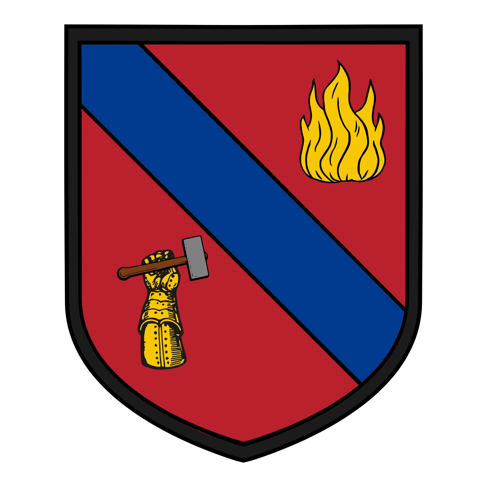
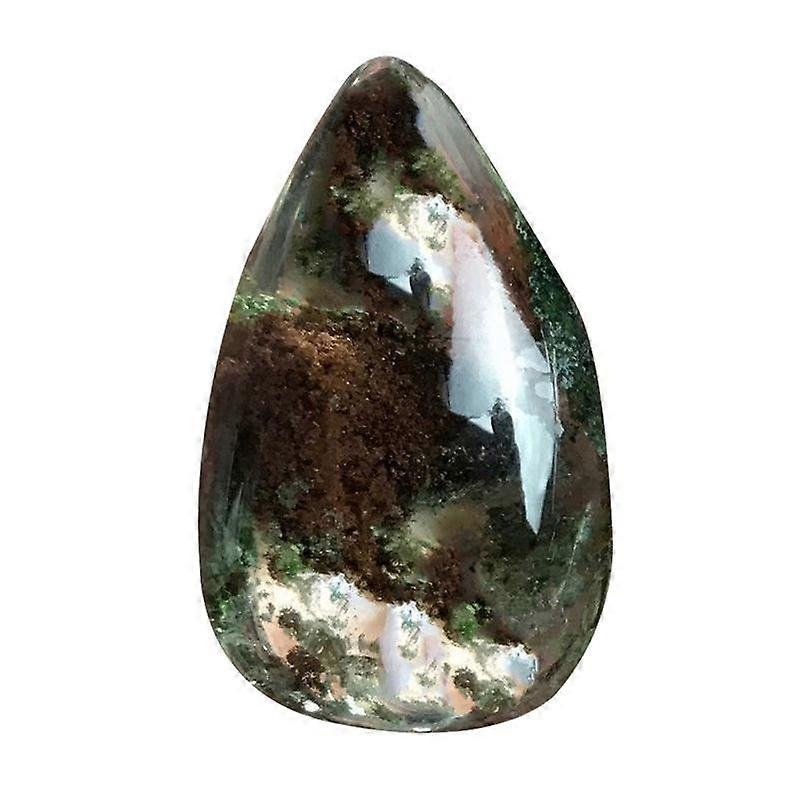

Troson
General Information
The Republic of Troson is the only self elected republic in Ariaunus. Troson is also the youngest nation of the bunch, having gained its independence from the Chalux Empire in 1489 PA.
The country is a region encompassing a "butterfly shaped" mainland and several smaller islands. It sits in the centre of the continent, and thus is often used as a trading port between nations.
Famously, the Gnott Strait has been built through the nation, effectively splitting Troson in 2 but providing passage for trade vessels from one side to the other easily.
While it may not be the largest nation geographically, its impact on the lives of everyone in Araiunus cannot be understated.
Climate: Moderate
Population: 1.2 million as of 1484 PA
Government: Elected Republic
Ruler: ██████ Clammir
Capital City: Khago
History
The history of Troson is one of strife and subjugation. The island that is now called Troson was the first land to be conquered by the Chalux Empire in 257 PA (Post Ascension). They called this land Torahson after the Chaluxian word for fertile. This is believed to be a reference to
the lush natural vegetation and farmlands in the area but other theories suggest it is due to the Chalux Empire viewing it as the birth of the empire. Regardless of the cause, the name stuck and the Torahson was swiftly subsumed into fledging Chalux Empire.

Rebellion of 1489
This rebellion broke out due to the Chalux Empires attempt to impose restrictions on Trosonites land rights, ordering them to hand over all land to the Chalux Empire for them to rent back. This naturally enraged the people of Troson, but none more so than one man: Arnick Mistone. Mistone was a human male who had spent his whole life working long shifts in the ports of
Khago. According to those close to him, he spent years saving up for a home to purchase for his family and had almost got enough when the house reforms were proposed. He was enraged and supposedly raced through the streets to the Chaluxian Army Outpost in the north of the city. He then yelled out to anyone who would listen from atop a statue in the square and ultimately gathered a mob who he then ordered to
storm the building. This was ultimately unsuccessful but the legend of his attempt spread throughout Torahson like wildfire.

The Chalux Empire did not consider this a major threat, assuming it to simply be yet another pointless rebellion. However, Mistone knew how to exploit this to his gain. He gathered a small cohort of allies, others who were tired of Chalux control. Together they travelled all across Torahson, calling for volunteers to come march with them. Thousands gathered, dropping their normal lives to pick up arms and follow. After several months of this,
finally the mob marched on Khago. They overwhelmed the Chaluxian Army Outpost with sheer numbers, killing hundred of guards and imprisoning the others. This was not without sacrifice however as hundreds of Trosonites died for the cause. Estimates place the total number somewhere between 400-1100. Included in this number is Arnick Mistone himself. According to eyewitness accounts, he perished after holding back 26 guards at once to give the others time to
help the wounded. The famous painting "The Last Stand" depicts this moment, and is currently hanging in the governmental chambers. Once the battle was won, the Chaluxian Army fled from Troson. The Republic of Troson was formed the following day, during which they elected the first President of Troson: Clammir. He still serves to this day. In recognition of their independence, the first thing Clammir did was commission an official coat of arms for the state.
A national day of mourning was held for all those who gave their lives for freedom.
Khago and the Gnott Strait
Khago has long since been the defacto capital of Torahson, and 3 years ago it became the official capital of Troson. Khago is a city that resides along the north western edge of Troson. It began life as a small port town in 259 PA, nothing more than somewhere for the Chaluxian Army to stop and refuel
as they head out on conquest. This began to change in 390 PA wtih the completion of the Gnott Strait. The Gnott Strait was conceptualised by Chalux leaders in 300 PA, to increase the level of mobility throughout the empire. The Gnott Strait is a little over 250 kilometres long, built over the narrowest part of Troson,
the "body of the butterfly". At its widest it is large enough for 3 galleons to pass each other unharmed, but at its smallest only one can get through. This only occurs in Khago itself as the canal was built around the town that already existed. To solve this problem, Khago has a stockpile of Ghost Stones.

Ghost Stones are small magical rocks that can temporarily turn someone, or a boat, intangible. Naturally, these items are heavily regulated to prevent people from using them for nefarious purposes. Ever since the Troson Revolution of 1489, the Ghost Stones have been in the hands of some of the larget trading companies in Troson,
but recent changes in leadership has elected to give the stones to the Troson government to manage. Consequently, this has given the Troson government much more bargaining power with those who wish to pass through the Gnott Strait. Those wishing to use the
Ghost Stones must submit a request with the Troson government, and once approved they will be given one. Then they need only mutter the magic word as they are travelling through Khago and they shall sail through unharmed. Once through, they can return the Stones at the next port.